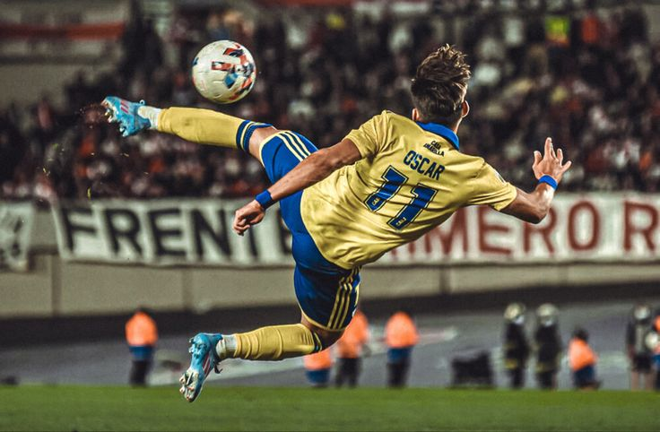
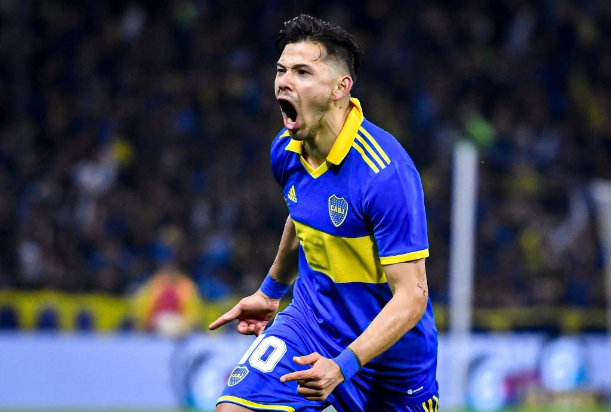

Información sobre el jugador
Nacimiento: Asunción, Paraguay
Nacionalidad: Paraguaya
Altura: 1.76
Peso: 73kg
Biografía
Empezó a jugar en las inferiores de Boca Juniors a los 14 años, pero por un asunto de papeles no pudo continuar en el club. Un cazador de talentos lo vio y fichó a Óscar para que jugara en las inferiores de Cerro Porteño. Luego de debutar en 2011, sus actuaciones atrajeron el interés del Real Madrid B y del Valencia.
En 2013, con sus buenas actuaciones, atrajo el interés del Baniyas SC de Emiratos Árabes Unidos, aparte de ser convocado a la Selección de Paraguay y ganar su primer título con Cerro Porteño en el Torneo Clausura de 2013, siendo una de las figuras del equipo titular.
En 2014, Óscar ya era valioso para Cerro Porteño, ya que disputó la Copa Libertadores y la Copa Sudamericana, teniendo un buen nivel de juego. Consiguió con Cerro Porteño el subcampeonato del Torneo Clausura 2014.
En 2015 sería un paso muy grande en su carrera, porque Racing Club lo compró por 2.7 millones de dólares por el 70% del pase, y sería su primera experiencia en la Argentina. Con el paso de los meses, Óscar se ganó el elogio de los hinchas y se transformó rápidamente en un jugador valioso para el club.
En 2016 es transferido al Shanghai Shenhua de China por 9 millones de dólares. Sin embargo, por motivos de cupo de extranjeros el equipo chino decidió cederlo al Alavés de la Primera División de España.
En 2019 llegó en condición de libre a San Lorenzo de Almagro para ser, junto a su hermano, Ángel Romero, dos refuerzos importantes para el club, hasta mediados de 2021, cuando rescindieron sus contratos y quedaron libres.
Óscar es caracterizado por su visión de juego, su buena gambeta y sus remates de media y larga distancia. Además, ayuda a sus equipos a construir jugadas de gol.
Galería de Imágenes


Volver al Inicio